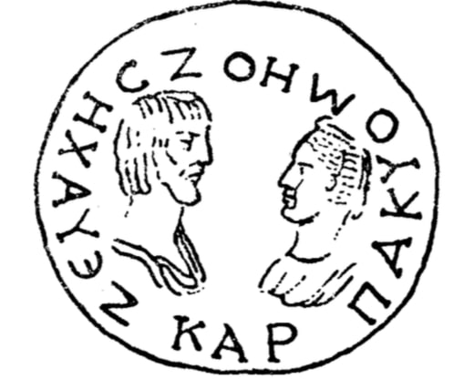

ოქროს ქამრის ბალთა
შინაარსი / Summary
მემორიალური
ბიბლიოგრაფია Bibliography
კრიტიკული გამოცემა Interpretive Edition
Ζευάχης ζωή μου, Καρπάκ Ζευάχης ζωή μου Καρπάκ
დიპლომატიური გამოცემა Diplomatic Edition
ΖΕΥΑΧΗΣΖΩΗΜΟΥΚΑΡΠΑΚ ΖΕΥΑΧΗΣ ΖΩΗ ΜΟΥ ΚΑΡΠΑΚ

Belt buckle from Armaziskhevi, 1940
{'ka': 'ზევახეს ჩემი სიცოცხლე, კარპაკი.'}
{'default': 'ეს არის წარჩინებული ცოლ-ქმრის გამოსახულება და ცოლი ქმარს ამგვარად მიმართავს. ნივთი კარპაკის საბეჭდავი უნდა იყოს (მისი სახელია ნეგატიურად ამოკვეთილი). სპეციალისტთა აზრით, კარპაკი და ზევახესი სერაფიტის და ასპავრუკ პიტიახშის მშობლები არიან. "კარპაკი" მხოლოდ ამ წარწერის მიხედვით ცნობილი, ირანული სახელია.\n "ზევახესი" საქართველოს ბერძნულ წარწერებში რამდენჯერმე გვხვდება. მის სადაურობაზე სხვადასხვა აზრი არსებობს, ნივთი ადგილობრივ ნახელავად არის მიჩნეული. ასოთა მოხაზულობა (μ, σ, υ, ε კუთხეებში საგანგებო ჩაღრმავებებით) და ენობრივი მონაცმი (ο და ω-ს ხმარების აღრევა -ζοη) მიუთითებენ რომაულ ხანაზე, ე.ი. ჩვენი წ.ა.\n I საუკუნეებზე. ისტორიული რეალიების გათვალისწინებით (არმაზის ბილინგვა, არმაზისხევის სამარხებისა და იქ დაცული ინვენტარის თარიღები) ნივთი და მისი წარწერა\n II ს-ით თარიღდება.'}
<div type="edition" xml:lang="ka" ana="mtavruli" xml:space="preserve">
<ab>
<lb n="1"/><w lemma="ქრისტე"><expan><abbr>ქ</abbr><ex>რისტ</ex><abbr>ე</abbr></expan></w>
<w lemma="განსუენება"><expan><abbr>გა</abbr><ex>ნ</ex><abbr>ო</abbr><ex>ჳ</ex><abbr>ს</abbr><ex>უ</ex><abbr>ენე</abbr></expan></w>
<w lemma="სულ">სოჳ<lb n="2" break="no"/>ლსა</w>
<name nymRef="ვაჩა">ვაჩაჲს<lb n="3" break="no"/>ასა</name>
<name nymRef="გურა"><expan><abbr>გო</abbr><ex>ჳ</ex><abbr>რაჲ<lb n="4" break="no"/>სასა</abbr></expan></name>
<name nymRef="მირა"><expan><abbr>მ</abbr><ex>ი</ex><abbr>რა</abbr><ex>ჲ</ex><abbr>ს</abbr><ex>ა</ex><abbr>ს</abbr><ex>ა</ex></expan></name>
</ab>
</div>